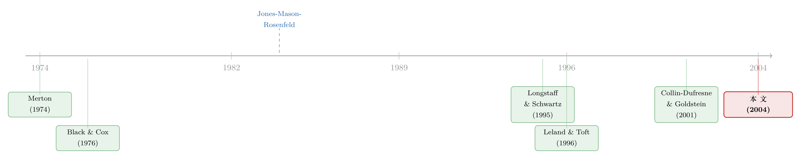

结构模型给债券定价，错的从来不是「太低」，而是「太散」
本文读的是 Eom, Helwege & Huang (2004, Review of Financial Studies)：他们把 Merton、Geske、Longstaff-Schwartz、Leland-Toft、Collin-Dufresne-Goldstein 这五个结构模型，放到同一批 182 只「干净」的公司债上做了一次正面对账，结论却把流传了三十年的「常识」掀翻了一半——老的 Merton 模型确实把利差算低了，可那些更「先进」的新模型，平均反而把利差算高了；而真正的病根，既不是太高也不是太低，是预测值离谱地散：给安全债算出近乎零的利差，给高风险债算出大得吓人的利差。
1 一个三十年的「老问题」
故事得从一句几乎人人会背的「定论」讲起。
自 Black 和 Scholes (1973)、Merton (1974) 把期权定价的那套随机分析搬到公司债上之后，信用风险的理论文献就像滚雪球一样膨胀。它的核心想法优雅得让人着迷：一家有限责任公司的股权，本质上就是一份以公司资产价值为标的、以债务面值为执行价的看涨期权——资产值钱，股东行权（继续经营）；资产不值钱，股东弃权（违约），把公司丢给债权人。于是债券价格、违约概率、信用利差，全都能从一个 Black-Scholes 式的公式里推出来。
可这套漂亮的框架，从诞生第一天起就背着一个洗不掉的污点：它算出来的信用利差，太低了。 市场上一只 BBB 级公司债的利差动辄一两百个基点，而 Merton 模型却常常只给出几十个、甚至几个基点。这就是著名的「信用利差之谜」(credit spread puzzle)。
接着，一个自然的反应是：既然模型算低了，那就把模型做得更复杂、更贴近现实，让它能吐出更高的利差。 三十年里，理论家们确实是这么干的——给模型加上息票 (coupon)、允许到期前就违约 (default before maturity)、放进随机利率 (stochastic interest rates)、让杠杆率围着一个目标值均值回归……每一篇新论文，都在「Merton 之上」叠一块砖。
然后，一个看似理所当然的推论悄悄成了行业共识：新模型 = 好模型。 既然这些扩展都是为了修复 Merton 的「利差太低」病，那它们当然应该比 Merton 更准。
但真正关键的一步，恰恰是几乎没人认真做过的那一步——把这些模型放到同一批真实债券上，正面比一比。 Eom、Helwege 和 Huang 这篇文章，做的就是这件不性感、却极其要紧的脏活累活。于是反转出现了。
2 五个模型，一条流水线
要做正面对账，先得把对手摆齐。文章挑了五个有代表性的结构模型，并按惯例简称 M、G、LS、LT、CDG：
- M（Merton, 1974）：最古典的版本。本文把附息债当成「一篮子零息债」(portfolio of zeroes) 来定价，每个现金流用对应期限的即期利率贴现——这是为了让它能和 LS、CDG 公平比较。
- G（Geske, 1977）：把附息债的息票看成一连串复合期权 (compound option)。每个付息日，股东要么卖新股付息、公司续命，要么违约、把整个公司交给债权人。
- LS（Longstaff & Schwartz, 1995）：引入 Vasicek (1977) 的随机利率；当资产价值跌到某个事先设定的边界时违约，债权人按本金的一个固定比例回收。
- LT（Leland & Toft, 1996）：公司连续滚动发行一笔固定期限、连续付息的债，违约边界是内生决定的（股东在「再发股续命」和「干脆违约」之间最优选择）。
- CDG（Collin-Dufresne & Goldstein, 2001）：在 LS 之上加了一条平稳杠杆率 (stationary leverage ratio)——公司只能在短期内偏离目标杠杆，长期会被拉回去。（关于「债务本身会动」这条线索如何补全了信用风险的另一半，可参见《债，其实一直在动》。）
这五个模型在四个维度上各不相同：违约边界怎么定、回收率多少、息票怎么处理、利率是否随机。文章的实现逻辑是一条标准流水线：每个模型都有解析或准解析的债券定价公式（G 模型的多元正态积分太难算，改用二叉树/有限差分），算出模型价格后，再换算成半年复利的「债券等价收益率」(bond equivalent yield)，与市场收益率相减，得到预测利差与实际利差之差。
注意：这是一篇实证检验论文，不是又一个新模型。它的「识别」不在于找外生冲击，而在于控制变量式的公平比较——同一批债、同一套参数估计口径、同一个利差定义，让五个模型在完全相同的赛道上各跑一遍。谁高谁低、谁准谁糙，一目了然。
参数估计是这条流水线里最容易藏污纳垢的环节，文章也最较真。几个关键约定：违约边界用资产负债表上的总负债账面值（而非单只债的面值），因为样本公司还有别的债，股权只有在所有债都还清后才有剩余价值；面值 F 取总负债，公司价值 V 取「股权市值 + 总负债账面值」；税率统一假设为 0.35；利率曲线用 Nelson & Siegel (1987) 或 Vasicek (1977) 拟合 CMT 数据。
3 把「结构模型」拆开看：从 Merton 说起
为了让后面的结果读得明白，值得把这套框架最底层的那块积木——Merton 模型——一步步摆出来。
第一步，资产价值服从几何布朗运动。设公司总资产价值 \(V_t\) 在风险中性测度下满足
$$dV_t = (r - \delta)\,V_t\,dt + \sigma_V\,V_t\,dW_t$$
其中 \(r\) 是无风险利率，\(\delta\) 是资产的支付率 (payout ratio)，\(\sigma_V\) 是资产波动率——注意它是不可观测的，这一点后面会要命。
第二步，把股权写成看涨期权。债务是一只面值 \(F\)、期限 \(T\) 的零息债；到期时若 \(V_T \ge F\)，股东还钱、拿走剩余 \(V_T - F\)；若 \(V_T < F\)，股东违约、拿到 \(0\)。这正是一份执行价为 \(F\) 的看涨期权的收益结构 \(\max(V_T - F,\,0)\)。于是由 Black-Scholes 公式：
其中
$$d_1 = \frac{\ln(V/F) + (r - \delta + \tfrac{1}{2}\sigma_V^2)\,T}{\sigma_V\sqrt{T}}, \qquad d_2 = d_1 - \sigma_V\sqrt{T}$$
第三步，债券价值是「资产减股权」的另一种写法。既然股东拿走了那份看涨期权，债权人拿到的就是剩下的部分：
$$B = V e^{-\delta T} N(-d_1) + F e^{-rT} N(d_2)$$
第四步，信用利差就这么挤出来了。把债券价格折算成连续复利收益率，再减去无风险利率：
$$s(T) = -\frac{1}{T}\ln\!\left(\frac{B}{F}\right) - r$$
这条式子是整篇文章的灵魂。它告诉你：结构模型里的信用利差，完全由三个东西驱动——杠杆 \(V/F\)、资产波动率 \(\sigma_V\)、期限 \(T\)。 杠杆越高、波动越大，期权越可能出局，利差越高。其余四个模型，无非是在违约边界、利率、息票、杠杆动态上各做文章，但「利差是资产期权的影子」这个内核没变。
这里也埋着结构模型实证最棘手的钉子：\(\sigma_V\) 看不见。文章的做法是用历史股权波动率、再用杠杆「还原」出资产波动率（直觉上 \(\sigma_E\,E \approx N(d_1)\,\sigma_V\,V\)，股权是放大了杠杆的资产）。他们一口气试了七种波动率估计（30/60/90/150 个交易日、事后 150 日、GARCH(1,1)、以及债券隐含波动率），最后正文统一汇报「150 个交易日历史波动率」这一种。记住这把尺子——它后面会成为「利差太散」的一大嫌疑人。
4 数据：182 只「干净」的债
识别要可信，样本就得「干净」。文章的取样逻辑近乎洁癖，目的只有一个：让定价误差只反映模型的好坏，而不是公司资本结构太复杂导致的噪声。
数据来自 Fixed Income Database 里 1986–1997 年每年 12 月最后一个交易日的债券价格（年末观测才好和年末财报对齐）；只留非金融、非公用事业（电力/燃气受监管，违约风险被监管者左右）、标准现金流（固定息票 + 到期还本）、且非可赎回、非可回售的债。从近 8700 只满足条件的债出发，再要求公司只有一两只公开债、且非次级债，剩 628 只；删掉只有「矩阵报价」(matrix price) 的不可靠观测；要求公司有公开股票、且 CRSP 上有至少五年股价（这样才能估波动率）；最后用 Moody's 手册逐一核对资本结构，剔掉债务种类超过五种、或债务有优先级差异的公司。层层筛下来，最终样本只剩 182 只债。
这批债长什么样？平均到期 8.97 年、平均息票 7.916%、平均评级约 7.5（Moody's 与 S&P 评级的均值，AAA=1）、平均资产市值 65.78 亿美元、平均市场杠杆 0.303、平均资产波动率 0.236。而最关键的因变量——对 CMT 的平均收益利差，只有 93.53 个基点（标准差 84.75）。换句话说，这是一批以投资级、低杠杆、大公司为主的「安全债」。文章也坦承，和市场上 7531 只同类债相比，本样本略偏安全（收益 7.4% vs. 7.6%）。这个「样本偏安全」的特征，待会儿读结果时要时刻记在心里。
5 主要结果：不是「太低」，而是「太散」
现在，把五个模型放上同一条赛道，看看跑出了什么。
第一个发现，证实了一半旧常识。 Merton 模型（M）的预测利差确实偏低——这与「信用利差之谜」、与 JMR (1984)「价格平均高估 4.5%」、与 Ogden (1987)「利差平均低估 104 个基点」的老结论一脉相承。G 模型同样偏低。到这里，故事还沿着教科书的剧本走。
但第二个发现，是彻底的反转。 LS、LT、CDG 这三个「更先进」的模型，平均利差不但不低，反而太高了。尤其是 Leland-Toft，它在绝大多数债上都高估利差，对高息票债尤其离谱——以至于它连短期债的信用风险都高估了（而旧文献一口咬定结构模型在短期债上利差「永远不够高」，这里恰好被打脸）。所以「结构模型一律低估利差」这句流传三十年的话，至少错了一半。
而第三个、也是最深刻的发现是：平均值本身就是个骗局。 文章反复强调，这些模型的预测利差「要么小得荒唐，要么大得离谱」(ludicrously small or incredibly large)，平均误差几乎不携带信息。真正的病不在水平 (level)，而在离散 (dispersion)：新模型对高杠杆、高波动的公司严重夸大信用风险，却对最安全的债依旧低估。于是平均下来「看着还行」，逐只看却全是大错。LS、CDG、LT 三个模型共享这个毛病；若再叠上随机利率、再用「面值回收」规则去刻画破产成本，离散度还会进一步恶化。
把三步连起来，文章给整个领域留下一句斩钉截铁的诊断：
结构债券定价的真正挑战，不是「把平均利差抬到比 Merton 高」——那太容易了，随便夸大点违约风险就行——而是要在抬高均值的同时，不把波动率、杠杆、息票带来的风险一起放大到失真。一句话：别为了喂饱风险债的胃口，而饿死安全债的利差。
这个洞见之所以重要，是因为它把「信用利差之谜」从一道「水平题」改写成了一道「形状题」。后来者若想做出更好的结构模型，得避开那些「专挑高风险债下狠手、却几乎不碰最安全债」的设定。这条思路，也呼应了后来文献对结构模型「漏掉了什么」的反思（比如把会计透明度这类信息摩擦请进利差的期限结构，见《财报越「干净」，短债越便宜》）。
6 文献脉络
把这条线索捋直，会看到一个相当清晰的「理论狂奔、实证滞后」的故事。
源头是 Black & Scholes (1973) 与 Merton (1974)：股权即看涨期权，债券定价从此有了第一性原理。紧接着 Black & Cox (1976) 引入「触界即违约」的安全边界，打开了「到期前违约」的大门。Geske (1977) 用复合期权处理息票。这是理论的第一波。

到 1990 年代，扩展进入第二波高潮：Longstaff & Schwartz (1995) 把随机利率装进来，Leland & Toft (1996) 把违约边界内生化、并刻画了信用利差的期限结构，Collin-Dufresne & Goldstein (2001) 又补上平稳杠杆。模型越来越精巧。
可实证这条线，几乎是空白。最早的认真尝试是 Jones, Mason & Rosenfeld (1984)——把 Merton 用到简单资本结构公司上，发现价格平均高估 4.5%，且对投机级债误差最大。Ogden (1987) 用新发债数据，发现利差平均低估 104 个基点。直到 Lyden & Saraniti (2000)，才第一次用个券价格同时实现并比较了 M 和 LS 两个模型，结论是两者都低估利差。Huang & Huang (2002) 则从另一个角度发问：用真实违约率校准，结构模型到底能解释信用利差里多大一块？
Eom-Helwege-Huang (2004) 正落在这条脉络的关键节点上：它第一次把五个主流模型一次性、同口径地放上同一批债，于是才有了「不是太低、而是太散」这个超越前人的判断。
7 评论与延伸（Q&A + 研究方向）
(a) 几个可能的疑问
Q：既然 Merton「低估」、新模型「高估」，那是不是说明新模型至少在方向上对了？
不能这么读。文章的核心恰恰是「平均方向」毫无意义。新模型的高估是离散度撑起来的虚高——它把一小撮高杠杆、高波动公司的利差吹到天上，平均一拉就「够高了」，但对绝大多数安全债它仍然低估。方向对、形状错，比方向错更难修。
Q：样本只有 182 只、且偏安全、偏投资级，结论能外推到高收益债吗？
这是最实在的担忧。样本偏安全意味着「对安全债低估」这条结论是稳的（样本里安全债多），但「对高风险债高估」是靠样本里那十几只低评级债撑起来的，统计上更脆。文章自己也承认样本比市场整体略安全。换言之，对垃圾债市场的推断，得打个折扣。
Q：会不会根本不是模型错，而是参数估错了——尤其那个看不见的资产波动率 \(\sigma_V\)？
文章很警惕这一点，所以试了七种波动率口径。结论是：除了债券隐含波动率，其余几种差别不大，离散度主要由极端值（短窗口更容易出极端值）贡献。所以波动率估计是「离散」的嫌疑人之一，但不是唯一元凶；息票处理、Vasicek 利率模型同样在制造离散。
Q：用「总负债账面值」而不是单只债面值当违约边界，会不会人为抬高了利差？
方向上确实会抬高（违约边界更高 = 更容易违约）。但这个选择是对的：样本公司还有银行贷款、商业票据等其他债，股权只有在所有债清偿后才有价值，用单只债面值会系统性低估违约风险。它能解释一部分「新模型偏高」，但解释不了「离散」——离散是跨债券的形状问题，不是一个水平平移能造成的。
Q：这和「信用利差里有多少是信用风险、多少是流动性/税收」那条文献是一回事吗？
不是同一个问题，但互补。本文问的是「给定结构模型框架，它定价准不准」；Huang & Huang (2002) 那条线问的是「信用利差里究竟有多大比例应该由信用风险解释」。如果后者的答案是「信用风险只占一小半」，那结构模型「平均低估」就部分是因为它本就不该解释全部利差——利差里还掺着流动性等成分（这一块的拆解，可参见《一个买卖价差，为什么越来越贵了？》）。
Q：LT 模型为什么偏偏在高息票债上错得最离谱？
因为 LT 假设公司连续滚动发行、连续付息，这套「简化的息票处理」在息票高时会过度放大持续的现金流出压力，从而把违约风险——进而把利差——顶得过高。文章明确把 LT 的系统性高估归因于它对息票的简化假设。
(b) 几个可能的研究问题与提案
1. 把「离散度」当成因变量，而不是「平均误差」。 【经济故事】本文最大的贡献是指出病在离散而非水平，但它停在了诊断。一个自然的延伸是：系统地把各模型的预测误差离散度对杠杆、波动率、息票、期限做回归，定位究竟哪个设定特征在制造离散。这等于给「下一个结构模型该避开什么」画一张地图。 【可行性】高。本文的数据与实现已具备，只是把分析对象从均值换成离散度，纯增量工作。
2. 在现代、更大的公司债样本（含 TRACE 与高收益债）上重做这场对账。
【经济故事】本文样本止于 1997、偏安全、且依赖不那么可靠的报价。2002 年后 TRACE 提供了成交价，样本可扩到数千只、覆盖垃圾债。重做能检验「对高风险债高估」这条脆弱结论到底稳不稳。
【可行性】高。TRACE + Compustat + CRSP 公开可得，识别就是同口径复制本文流水线。
3. 把流动性溢价显式地从结构模型残差里剥出来。 【经济故事】结构模型只管信用风险，可利差里掺着流动性。若把模型预测利差当「信用部分」，用实际利差减去它得到残差，再看残差能否被流动性指标（成交量、买卖价差、外资持有比例）解释，就能给「利差里有多少不是信用」一个结构化的答案。 【可行性】中。需要流动性数据与成交数据，识别难点在于模型设定误差与流动性会混在残差里，得用工具变量或制度断点把两者分开。
4. 外资持有人会不会系统性地改变结构模型的定价误差？ 【经济故事】若某只债的边际买家是受监管约束、或风险偏好不同的外资机构，其市场利差就会偏离纯信用基准，表现为结构模型的「系统性误差」。把模型残差对外资持有份额回归，能检验「持有人结构」是否是利差之谜的一块拼图。 【可行性】中。需要债券层面的持有人数据（如保险公司明细持仓、NAIC 数据），识别上可借助指数纳入或监管分类变化作为外生冲击。
5. 内生 vs. 外生违约边界，到底谁的定价误差更小？ 【经济故事】LT 的边界内生、LS/CDG 的边界外生，本文发现 LT 系统性高估。一个干净的对照实验是：在完全相同的样本上，把「边界设定」作为唯一变化的维度，分离出「内生化」本身对定价误差的净贡献，回答「违约边界该不该让股东最优选择」这个老争论。 【可行性】中。实现五个模型的工程量不小，但识别思路清晰，属于「难在体力、不难在逻辑」。
评论与判断
我的看法是：这篇文章的贡献，不在于又「检验」了几个模型，而在于重新定义了问题。在它之前，整个领域把信用利差之谜当成一道「模型吐出的利差太低、需要往上抬」的水平题；它之后，问题变成了「如何在不破坏横截面形状的前提下抬高均值」的形状题。这种把诊断从一阶矩推进到二阶矩的洞见，是真正的学术增量——它让后来者明白，简单地「加大违约风险」是死路，因为代价是安全债被进一步饿死、风险债被进一步喂撑。
对识别的担忧，我有两点。其一是样本：182 只、偏安全、偏投资级、且部分依赖矩阵报价，使得「对高风险债高估」这条最反直觉的结论，其实建立在十几只低评级债的薄弱基础上，统计上经不起太重的推敲。其二是参数与模型误差的纠缠：资产波动率不可观测、违约边界靠总负债近似、利率用 Vasicek 拟合，这些都会进入残差，使得「模型错」与「参数估错」难以彻底切开——文章已尽力（七种波动率口径）但无法根除。
后续我最想看到的，是用 TRACE 时代的大样本、把信用与流动性显式分离之后，本文那张「高风险债高估、安全债低估」的图景还成不成立——以及，能不能找到一个既不饿死安全债、又不喂撑风险债的设定。这恰恰是本文留给整个领域、至今仍未完全合上的那道题。
参考文献
- Black, F., and J. Cox (1976). Valuing Corporate Securities: Some Effects of Bond Indenture Provisions. Journal of Finance 31(2), 351–367.
- Black, F., and M. Scholes (1973). The Pricing of Options and Corporate Liabilities. Journal of Political Economy 81(3), 637–659.
- Collin-Dufresne, P., and R. Goldstein (2001). Do Credit Spreads Reflect Stationary Leverage Ratios? Journal of Finance 56(5), 1929–1957.
- Eom, Y. H., J. Helwege, and J.-Z. Huang (2004). Structural Models of Corporate Bond Pricing: An Empirical Analysis. Review of Financial Studies 17(2), 499–544.
- Geske, R. (1977). The Valuation of Corporate Liabilities as Compound Options. Journal of Financial and Quantitative Analysis 12(4), 541–552.
- Huang, J.-Z., and M. Huang (2002). How Much of the Corporate-Treasury Yield Spread is Due to Credit Risk? Working paper, Penn State and Stanford.
- Jones, E. P., S. Mason, and E. Rosenfeld (1984). Contingent Claims Analysis of Corporate Capital Structures: An Empirical Investigation. Journal of Finance 39(3), 611–625.
- Leland, H. (1994). Corporate Debt Value, Bond Covenants, and Optimal Capital Structure. Journal of Finance 49(4), 1213–1252.
- Leland, H., and K. Toft (1996). Optimal Capital Structure, Endogenous Bankruptcy, and the Term Structure of Credit Spreads. Journal of Finance 51(3), 987–1019.
- Longstaff, F., and E. Schwartz (1995). Valuing Risky Debt: A New Approach. Journal of Finance 50(3), 789–820.
- Lyden, S., and D. Saraniti (2000). An Empirical Examination of the Classical Theory of Corporate Security Valuation. Barclays Global Investors, San Francisco, CA.
- Merton, R. (1974). On the Pricing of Corporate Debt: The Risk Structure of Interest Rates. Journal of Finance 29(2), 449–470.
- Nelson, C., and A. Siegel (1987). Parsimonious Modeling of Yield Curves. Journal of Business 60(4), 473–489.
- Ogden, J. (1987). Determinants of the Ratings and Yields on Corporate Bonds: Tests of the Contingent Claims Model. Journal of Financial Research 10(4), 329–339.
- Vasicek, O. (1977). An Equilibrium Characterization of the Term Structure. Journal of Financial Economics 5(2), 177–188.